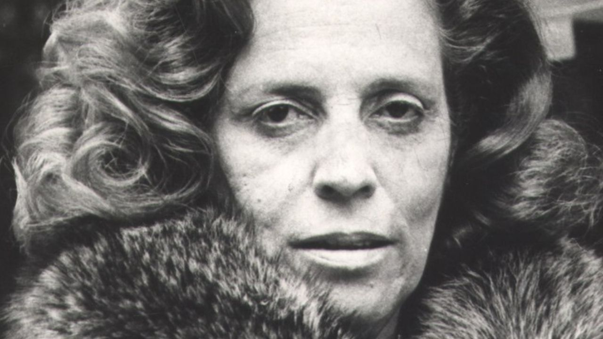
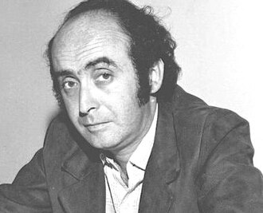
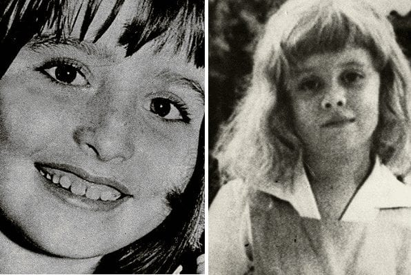
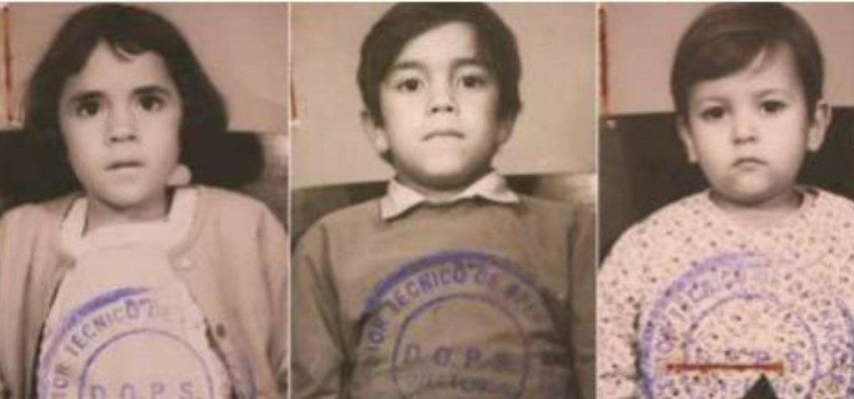

Os militares tentaram forjar um suicídio, mas a farsa foi desmascarada, gerando comoção popular. A missa de sétimo dia na Catedral da Sé se tornou a primeira grande manifestação pública contra a ditadura desde o AI-5.
Anos depois, a Justiça responsabilizou o Estado brasileiro pelo crime, e o atestado de óbito foi retificado para constatar que a morte foi causada por tortura. O episódio simboliza a brutalidade do regime e a luta pela redemocratização.

As duas meninas, assassinadas brutalmente, e cujos culpados jamais foram punidos por influência da ditadura. Araceli e Ana Lídia foram mortas, respectivamente, em maio e setembro de 1973 — a primeira em Vitória e Ana Lídia, em Brasília. Tinham entre 7 e 8 AnosAraceli Crespo ficou sequestrada por dois dias, durante os quais for repetidamente estuprada e dopada. Foi encontrada morta seis dias depois, em um matagal. Dos dois principais suspeitos do crime, um era filho de Dante Michelini, um latifundiário que gozava de grande influência junto ao governo militar. A denúncia da época mostrava que Michelini pai havia usado as suas ligações para dificultar as investigações. Apesar de terem sido condenados, os acusados sairiam impunes depois que a sentença foi anulada nas instâncias superiores.
No caso de Ana Lídia Braga, a investigação foi abafada assim que começaram a aparecer suspeitas de que o filho do então Ministro da Justiça, Alfredo Buzaid, estaria envolvido no crime. Em 1974, a ditadura emitiria uma ordem expressa à imprensa proibindo falar do crime. O processo acabou sendo arquivado sem que se avançasse nas investigações.

Zuleide Nascimento tinha só quatro anos quando foi “capturada” junto aos irmãos de 2, 6 e 9 anos de idade, em 1970. A família havia se engajado na luta armada com a Vanguarda Popular Nacional, de Carlos Lamarca. Quando o grupo foi preso, as crianças foram junto. O mais novo deles, Ernesto, acompanhou os pais nas prisões clandestinas e, ainda bebê, presenciou as torturas do pai. Depois, os quatro acabaram metidos em um avião em direção à Argélia, e depois a Cuba, em uma negociação da esquerda com o governo militar que envolveu o sequestro do então embaixador alemão Ehrenfried von Holleben. Zuleide e os irmãos só seriam autorizados voltar ao Brasil mais de dez anos depois.